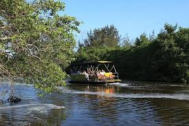
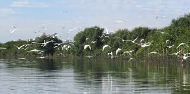
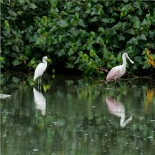
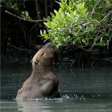
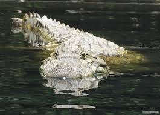
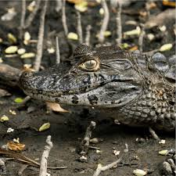
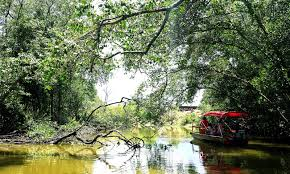

Pantanal Carioca
Explore a rica biodiversidade da lagoa e conecte-se com a natureza exuberante no coração da Barra.

Jacaré Jack
Fique de olho! Durante o passeio, preste bastante atenção nas margens do manguezal. Nosso famoso jacaré-de-papo-amarelo adora tomar um sol e observar os visitantes.







Duração
⏳ 45 minutos
Valor Médio
R$ 50 por pessoa
Sobre a Experiência
O passeio pelo Pantanal Carioca é um dos roteiros mais famosos da região da Lagoa da Tijuca. Durante o trajeto, o barco percorre os canais naturais que formam o arquipélago da Ilha da Gigóia, passando pelas 10 ilhas da região e áreas de manguezal preservadas.
Ao longo do percurso, os visitantes podem observar a rica fauna e flora local. É comum avistar jacarés, garças, capivaras e diversas aves que vivem nos manguezais da lagoa, tornando o passeio uma experiencia única de contato com a natureza dentro da cidade do Rio de Janeiro.
O que você verá
- 🐊 Jacarés-de-papo-amarelo
- 🐾 Capivaras em seu habitat
- 🦜 Aves raras e migratórias
- 🌿 Manguezais preservados
Informações
🗓️ Diariamente
Saídas exclusivas e agendadas para garantir a melhor experiência.